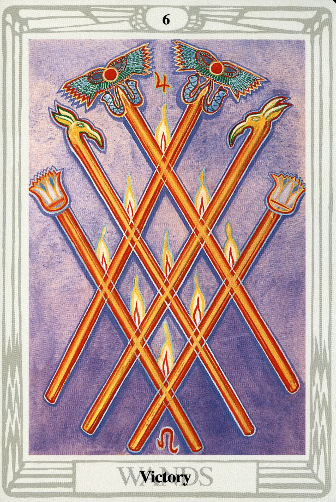

Wands
Six of Wands
Victory

(Jupiter in Leo)
10° to 20° Leo
August 2 to August 11
Original Title: Lord of Victory.
Golden Dawn Model: Two hands appear from clouds right and left of the card and clasp in the center with the grip of the First Order. They hold six wands, crossed three and three. Flames appear where wands meet.
King Scale for Tiphareth: Clear Pink Rose.
The Four Scales for Jupiter: Violet; Blue; Rich Purple; Bright Blue, rayed Yellow Emerald.
The Four Scales for Leo: Yellow (greenish); Deep Purple; Grey; Reddish Amber.
Formula: 6 (Tiphareth) of Wands (Atziluth) +Jupiter in Leo = VICTORY
The Six of Wands is called Victory; the Six of Cups is Pleasure; the Six of Swords is Science; and the Six of Disks is Success. all the sixes are wonderful cards. What gives? Are the four sixes special? You bet they are!
On the Tree of Life, Tiphareth is the direct reflection of Kether. It is the Son of the Father. It is perfectly balanced, left to right and top to bottom. It is the heart center of our psychic bodies and the Ruach of our souls. It rules as the central Sun King, surrounded by the spheres of the planets: Chesed (Jupiter), Geburah (Mars), Netzach (Venus), Hod (Mercury), Yesod (Moon), and even Binah (Saturn). Consequently, no matter how incompatible the card's planetary and zodiacal relationship may be, if that card is a six, we are in Tiphareth, and if we are in Tiphareth we're looking good.
In the case of the Six of Wands, we are doubly blessed with the happy marriage of expansive, boisterous, and generous Jupiter in powerful Sun-ruled Leo. This is the recipe for triumphant Victory.
This card is a relatively faithful version of the Golden Dawn model. The wands are a bit more elaborate and represent those used by various GD officers. The two topped with winged solar disks are those of the Chief Adept, the others are clearly Phoenix and Lotus wands.